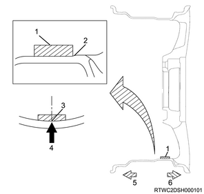
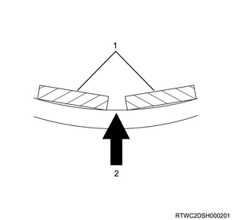

Caution
- Adjustment of wheel balance should be performed from the outer side.
- Adjustment to the inner side should be performed after completing adjustment to the outer side.
Note
- The following shows the outer side wheel balance adjustment procedure using stick-on balance weights.
- Applied only to the outer side of 17 inch aluminum wheel.
1. Remove the balance weight from the disc wheel.
Caution
- Be careful not to scratch the wheel.
- Do not reuse the removed balance weight.
Note
- Remove the double-sided tape remaining on the wheel, and clean the bonding surface of the balance weight.
2. Install the disc wheel to the wheel balancer.
3. Start the wheel balancer.
4. Check display of the wheel balancer.
Note
- Confirm the amount and position of unbalance.
5. Calculate the balance weight value from the imbalance value.
Note
- Multiply the indicated unbalance amount by 5/3.
| Calculation example |
| Indicated unbalance amount | ： 23 g { 0.81 oz } |
| Coefficient | 5/3 |
| Calculated value | ： 38.3 g { 1.35 oz } |
| Weight of balance weight to be used | ： 40 g { 1.41 oz } |
6. Select the balance weight.
Note
- Select a balance weight closest to the calculated value.
| Balance weight selection example |
| Calculated value | Weight of balance weight to be used |
| ： 32.5 to 37.4 g { 1.146 to 1.319 oz } | ： 35 g { 1.23 oz } |
| ： 37.5 to 42.4 g { 1.323 to 1.496 oz } | ： 40 g { 1.41 oz } |
7. Install the balance weight to the disc wheel.
Note
- Align the center of the balance weight with the position indicated on the balancer, and stick the balance weight.
Caution
- Use a new balance weight.
- The balance weight bonding surface on the disc wheel side should be cleaned.

- Balance weight
- Align to the groove.
- Center of balance weight
- Balancer indication position
- Inner side
- Outer side
Note
- When the weight of balance weight to be used is 60 g {2.12 oz} or more, the weight should be divided and stuck in 2 portions centering the balancer indication position.
Caution
- The number of balance weight pieces to use should be 2 or less.

- Balance weight
- Balancer indication position
8. Start the wheel balancer.
9. Check display of the wheel balancer.
Limit： 5 g { 0.18 oz } Unbalance amount
Note
- If the amount of unbalance is at or more than the limit value, repeat the wheel balance adjustment procedure again.